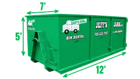
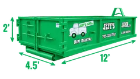

No bulky pickup in Orillia
What the City takes at the curb.
Orillia's curb rules are different from Barrie's and the County's. Three things to know before you put anything out.
From the City of Orillia's website and 2026 collection guide, checked October 2026. Your collection day is on orillia.ca. Too big for a clear bag? Our crew carries it out and hauls it away, or we drop a bin you fill at your own pace.
Your Orillia quote
What to send us.
Tell us what is going and you will know the price before we start. The quote is free.
- 1Your addressOrillia is outside Zone 1, so the price is for your street.
- 2A photoOf the junk or the job.
- 3When you need itThe 3 day bin is a Zone 1 deal, so it is not offered in Orillia.
Not sure which size? Which bin do I need?
Jeff to confirm: Can the Orillia page show prices? For example the same bin fill prices as Barrie plus a travel charge, or a "from" price for bins. "junk removal orillia prices" and "bin rental orillia prices" are both searched.
Got a truck and a small load?
The Orillia dump on Kitchener Street: fees and who can use it.
The City's Waste Diversion Site is at 100 Kitchener Street, run by the City.
| What | How it works |
|---|---|
| Fees | By weight, with a minimum, and a flat fee for each mattress. A small load of one kind of thing under 100 kg is a flat fee: bring exact change. |
| Bags | Clear and tagged is free. Household garbage in black bags is charged at the garbage rate. |
| No charge | Scrap metal, electronics, tires (up to 10) and household hazardous waste. |
| Not taken | Asbestos. |
| Hours | On orillia.ca, on the City's Waste Diversion Site page. |
Or let us carry it out. We take it from the basement, upstairs or the garage. There is no truck to find and no sorting at the scale. Appliances go to recycling.
Around Orillia
Oro-Medonte, Severn and Ramara.
We work in the townships around Lake Couchiching too.
The City says no other drop off is allowed for Severn, Ramara and Oro-Medonte. Every town we serve
Jeff to confirm: Orillia recent jobs. Approve the three Orillia jobs listed in the office app (a household clear out in April 2026 and two bin rentals, in July and September 2026) and send one Orillia job photo for the top. Nothing about them goes on the page until you say so.
Reviews
Don't take our word for it.
★★★★★
[Real Google review goes here]
★★★★★
[Real Google review goes here]
★★★★★
[Real Google review goes here]
Questions
Orillia junk, bin and dump questions.
Still wondering? Call during business hours or text us any time.
How do I get rid of a fridge in Orillia?
The Kitchener Street site charges for fridges, freezers and air conditioners. Or we carry it out and take it to recycling. Appliance removal
Do I need a permit for a bin in Orillia?
Not when it sits on your own driveway, which is where most bins go. If it has to go on a City road, call the City of Orillia first and ask whether you need its Road Occupancy permit. Getting a permit is up to you.
Is there free junk removal in Orillia?
Not from us or the City. Everything outside the free list at Kitchener Street has a fee, and so do we: call for your price.
When are you open?
Monday to Friday 8am to 7pm, and Saturday 8am to 12pm. Closed Sundays and holidays.
More Orillia services.
 Junk removalOur crew comes up Highway 11 and carries it out.Junk removal in Orillia →
Junk removalOur crew comes up Highway 11 and carries it out.Junk removal in Orillia →
Bin rentalA garbage bin on your Orillia driveway.Bin rental in Orillia →
Dirt and concrete binsOne material per bin.Dirt and concrete bins →Appliance removalFridges and more, taken to recycling.Appliance removal → Estate clean outsA whole house cleared.Estate clean outs →
Estate clean outsA whole house cleared.Estate clean outs → CommercialJunk removal for businesses.Commercial →Furniture donationGood furniture to Furniture Bank. There is a pickup fee.Furniture donation →
CommercialJunk removal for businesses.Commercial →Furniture donationGood furniture to Furniture Bank. There is a pickup fee.Furniture donation →